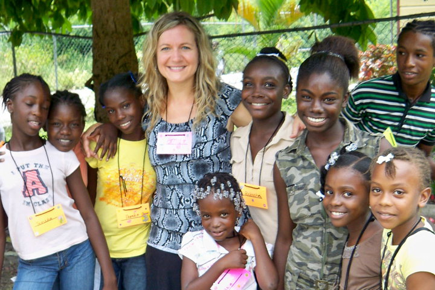
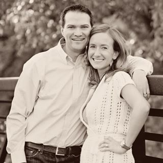

Maxwell James
Preacher of the Church of Christ in Montego Bay since 2002 "Praise God from whom all blessings flow, and I am truly thankful and so excited and wanted to let you know that we appreciate your help. May God bless you all."
Amy Hammond
Attends West Mason Church of Christ & has taught VBS in Jamaica for the last 7 years "In June, my friend and I were reading throughout 1st & 2nd Cor. and we looked at each other and just knew right then and there that the brethren in Montego Bay should have a church building.....and the mission began!"
Scott Lyon
Deacon and co-treasurer at West Mason Church of Christ "My wife Sarah has been involved with VBS in Jamaica and has visited the island 14 times over the last 12 years. I, too, have worshipped with the brethren in Montego Bay. With my bachelor in finance and 13 years of experience, I will be overseeing the financial side of this endeavor."

David Tant
Has made 67 visits over 28 years to spread the gospel and teach the will of God to the Jamaican people "I have known Maxwell James a long time and can testify to his sincerity, compassion for people, and love for the Lord."